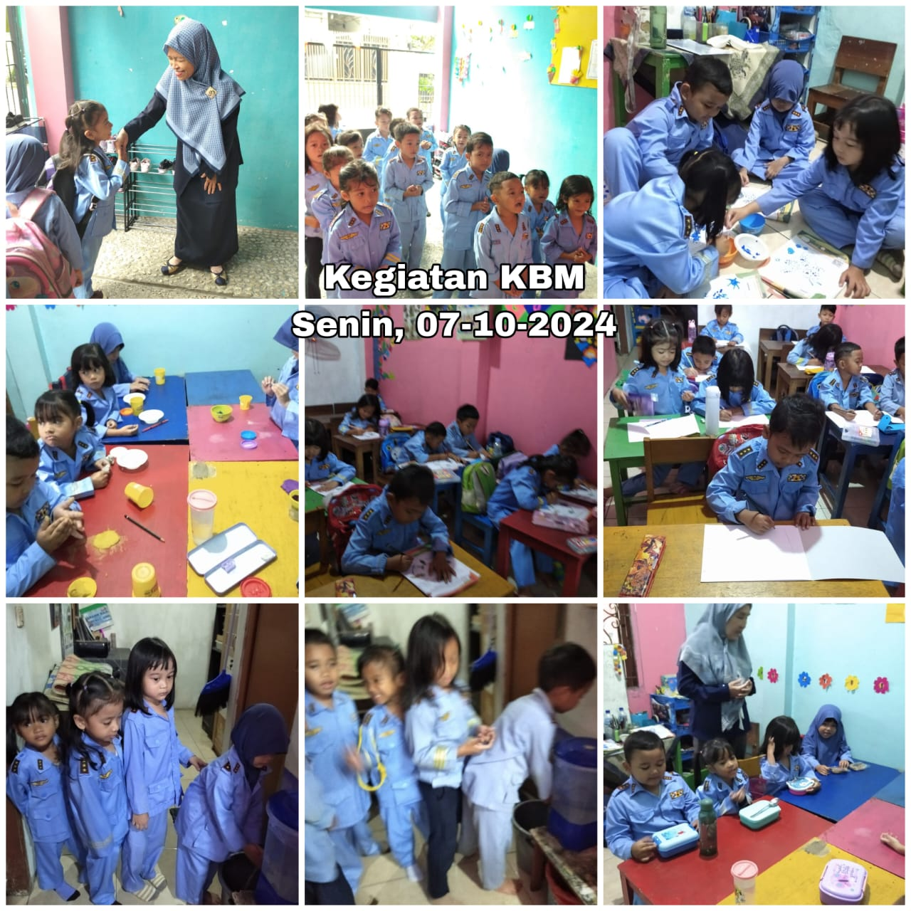
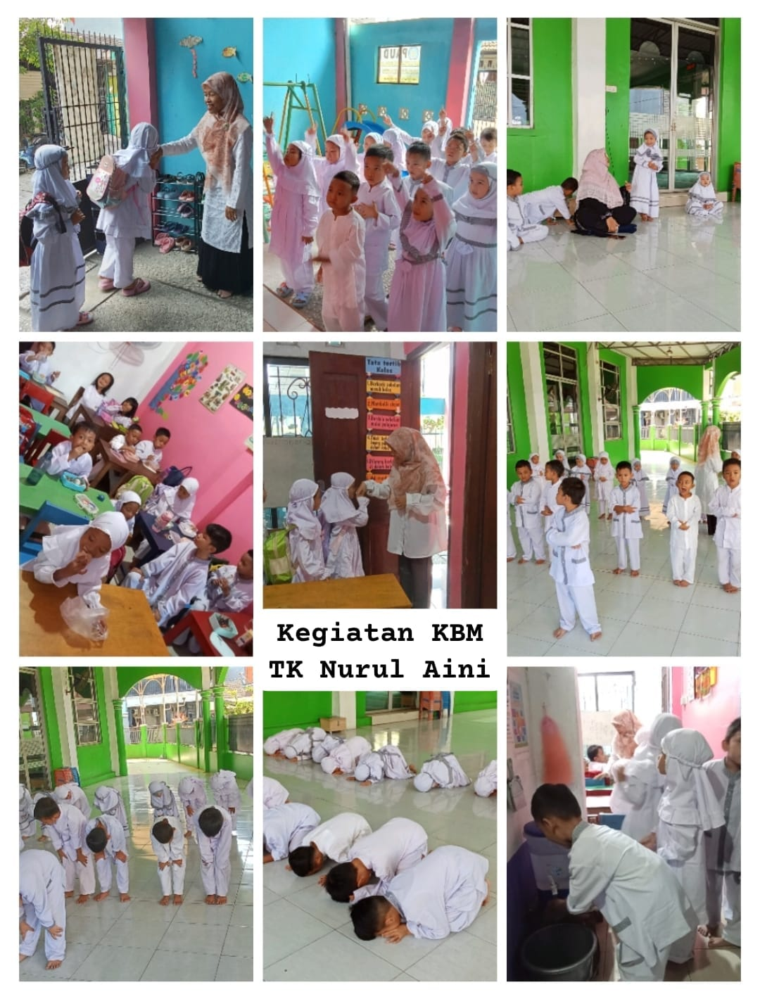
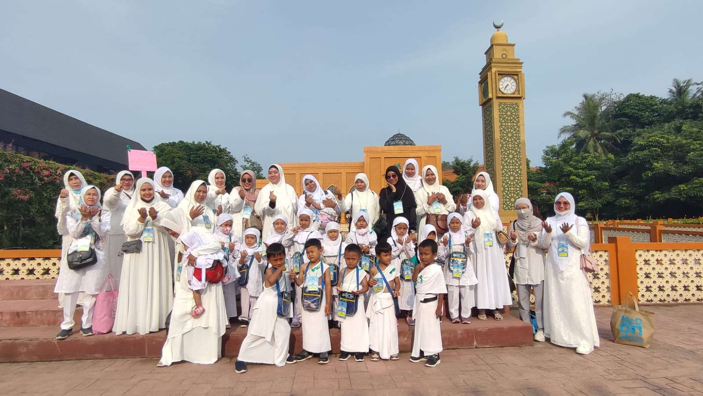

TK
TK
TK
TK
Mendidik anak usia dini agar tumbuh cerdas, berakhlak, dan ceria
TK Nurul Aini adalah lembaga pendidikan anak usia dini yang berkomitmen untuk membentuk karakter, kreativitas, dan kecintaan belajar sejak dini melalui kegiatan bermain sambil belajar yang menyenangkan.



Membentuk generasi anak yang cerdas, ceria, dan berakhlak mulia.
Pendaftaran dibuka hingga 30 Juli